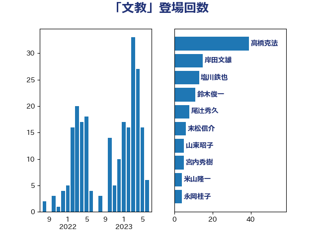

単語「文教」

| 太田房江 | 自由民主党 | 43 回 |
| 山東昭子 | 自由民主党 | 16 回 |
| 梅村みずほ | 日本維新の会 | 10 回 |
| 岸田文雄 | 自由民主党 | 7 回 |
| 末松信介 | 自由民主党 | 6 回 |
| 前原誠司 | 国民民主党 | 5 回 |
| 斎藤嘉隆 | 立憲民主党 | 4 回 |
| 鈴木俊一 | 自由民主党 | 4 回 |
| 麻生太郎 | 自由民主党 | 4 回 |
| 塩川鉄也 | 日本共産党 | 3 回 |
| 水岡俊一 | 立憲民主党 | 3 回 |
| 浮島智子 | 公明党 | 3 回 |
| 片山大介 | 日本維新の会 | 3 回 |
| 田村智子 | 日本共産党 | 3 回 |
| 礒崎哲史 | 国民民主党 | 3 回 |
| 吉良よし子 | 日本共産党 | 2 回 |
| 山下雄平 | 自由民主党 | 2 回 |
| 玉木雄一郎 | 国民民主党 | 2 回 |
| 義家弘介 | 自由民主党 | 2 回 |
| 舩後靖彦 | れいわ新選組 | 2 回 |
| 萩生田光一 | 自由民主党 | 2 回 |
| 金子恭之 | 自由民主党 | 2 回 |
| 三谷英弘 | 自由民主党 | 1 回 |
| 井上信治 | 自由民主党 | 1 回 |
| 伊藤渉 | 公明党 | 1 回 |
| 佐々木さやか | 公明党 | 1 回 |
| 佐藤英道 | 公明党 | 1 回 |
| 吉川ゆうみ | 自由民主党 | 1 回 |
| 坂本哲志 | 自由民主党 | 1 回 |
| 堂故茂 | 自由民主党 | 1 回 |
| 宮本岳志 | 日本共産党 | 1 回 |
| 尾辻秀久 | 無所属 | 1 回 |
| 山田美樹 | 自由民主党 | 1 回 |
| 岡本三成 | 公明党 | 1 回 |
| 岩渕友 | 日本共産党 | 1 回 |
| 志位和夫 | 日本共産党 | 1 回 |
| 杉尾秀哉 | 立憲民主党 | 1 回 |
| 松沢成文 | 日本維新の会 | 1 回 |
| 横沢高徳 | 立憲民主党 | 1 回 |
| 津島淳 | 自由民主党 | 1 回 |
| 熊谷裕人 | 立憲民主党 | 1 回 |
| 田島麻衣子 | 立憲民主党 | 1 回 |
| 石井苗子 | 日本維新の会 | 1 回 |
| 石原正敬 | 自由民主党 | 1 回 |
| 福山哲郎 | 立憲民主党 | 1 回 |
| 赤羽一嘉 | 公明党 | 1 回 |
| 足立康史 | 日本維新の会 | 1 回 |
| 遠藤敬 | 日本維新の会 | 1 回 |
| 野田聖子 | 自由民主党 | 1 回 |
| 高木かおり | 日本維新の会 | 1 回 |
| 高木毅 | 自由民主党 | 1 回 |
| 鰐淵洋子 | 公明党 | 1 回 |